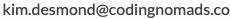

Frequently Asked Questions (FAQs)¶
Quick and searchable answers for common questions.
How many students can I mentor for?¶
We want to be able to invest in you and make you part of our mentor community. Therefore, we aim for a minimum number of 3 students per mentor.
There's currently no maximum number of students you can take on, as long as it fits in your schedule and you can provide the high quality and allotted time commitment that we expect. If you're thinking of taking on more than 10 students, please get in contact so we can better understand your situation and motivations.
Whom to contact regarding payment?¶
Write an email to .
Whom to contact regarding general mentorship questions?¶
Write an email to  or ping me on slack @Martin Breuss.
or ping me on slack @Martin Breuss.
Student No-Shows during scheduled 1-on-1 calls¶
Your meeting time slot should be on a fixed time every week. If a student does not show up for your meeting and doesn't contact you more than 12 hours ahead of your meeting time, this will be considered a no-show.
If you haven't heard from your student until the meeting time, please wait for 10 minutes to see whether they are just late, then cancel the call. Record the no-show in your Session Report. We will pay you 50% of the scheduled call time in the event of a no-show. This also applies for a <12 hours communicated reschedule attempt from the student's side.
Record 25 minutes in your Toggl timesheet and make sure to mention it was a no-show in your Session Report. Please clearly communicate to your students that we aim for a professional environment, which means, in this case, to stick to scheduled meetings as much as possible, and give at least 24 hours notice if it won't be possible to make the meeting for them.
Rescheduling with prior notice¶
If a student needs to reschedule one of their meetings and does so with adequate prior notice (12 hours or more), we'd encourage you to find a new time with them. Life can get in the way, and as long as this is an exception, and you can manage to make time in your own schedule, we want to support students to have their mentor calls. You can add 5 minutes of billable time via Toggl for each reschedule. That said, we expect reschedules to be rare.
You have no obligation to reschedule any meeting with the student if it happens outside of the agreed-upon time slot. We understand that you have other work to do, and we want to set clear examples to avoid time spent on scheduling wherever possible. If you do want to reschedule, it is at your own discretion to do so.
Please understand that we can't pay for extra time spent scheduling calls, which is why we'd like to avoid it as much as possible. This is also why we strongly suggest to set up firm and clear meeting times with your students.
If rescheduling happens often, please let the student know that they should find a different time slot for your 1-on-1 call. Also, please inform me at .
A student has not responded since x time¶
Some students need a tad more encouragement than others. Please attempt to get and stay in contact with your mentee even if they seem unresponsive. Ask them if there's any way you can help (coding-related or maybe with time management tips), send encouraging words, an interesting link or a funny coding-related meme.
However, if you haven't heard back from your mentee in 2 weeks, please reach out to .